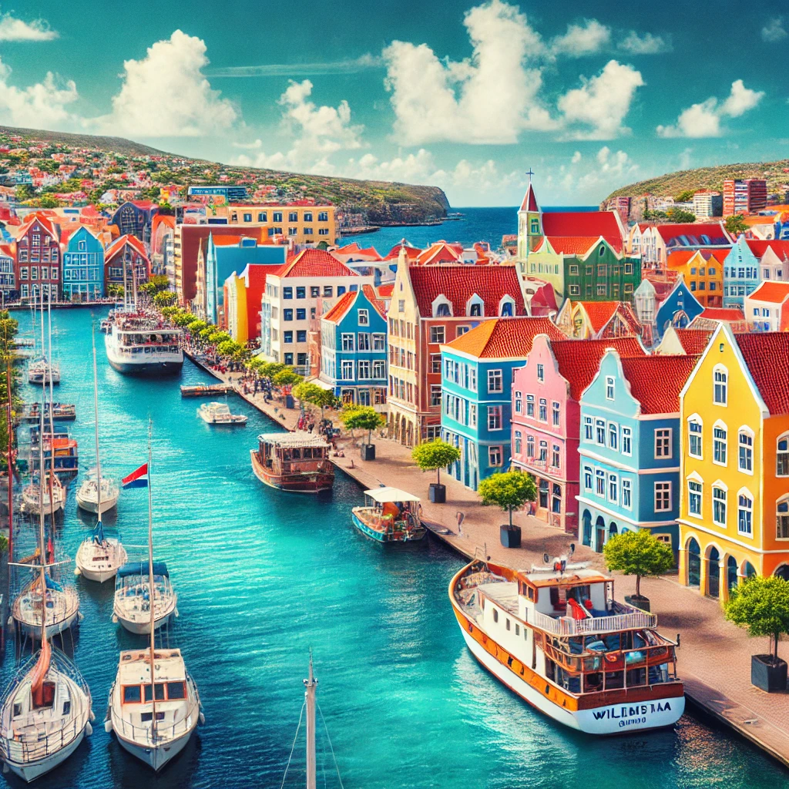
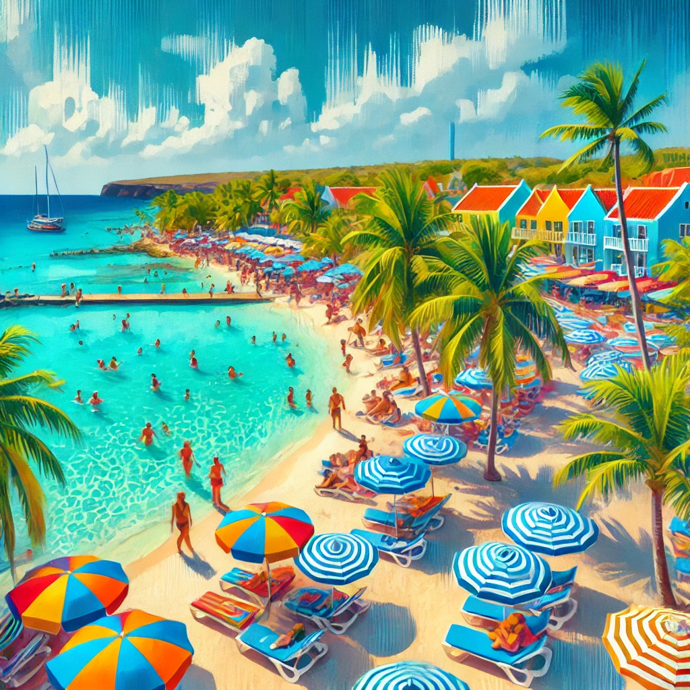
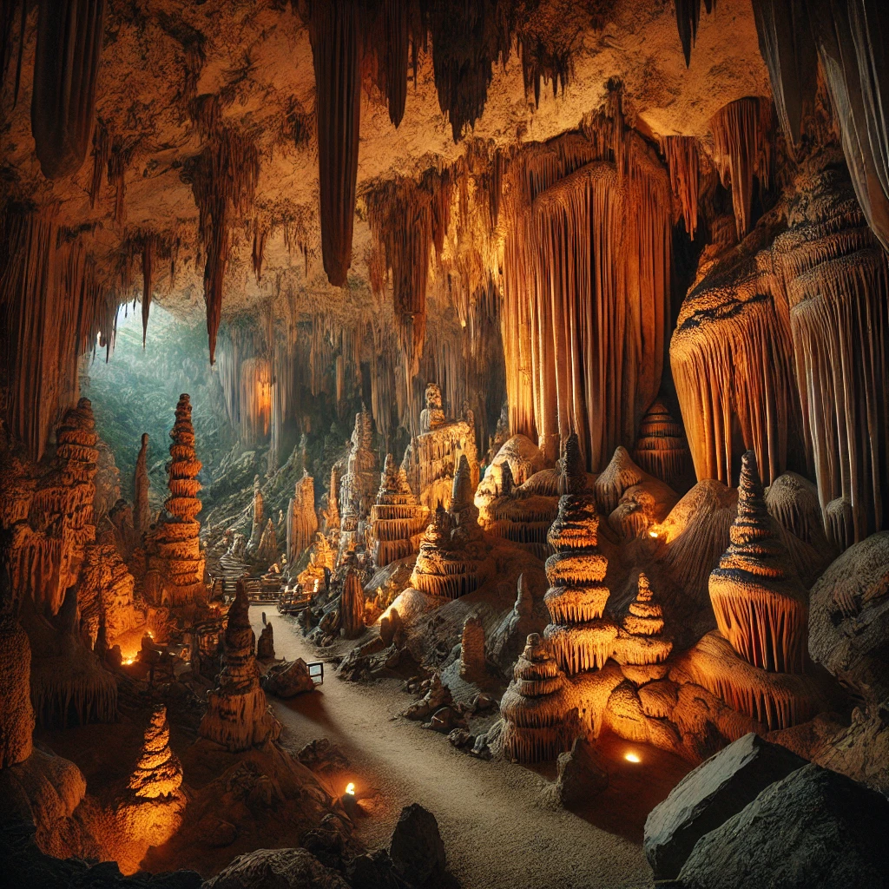
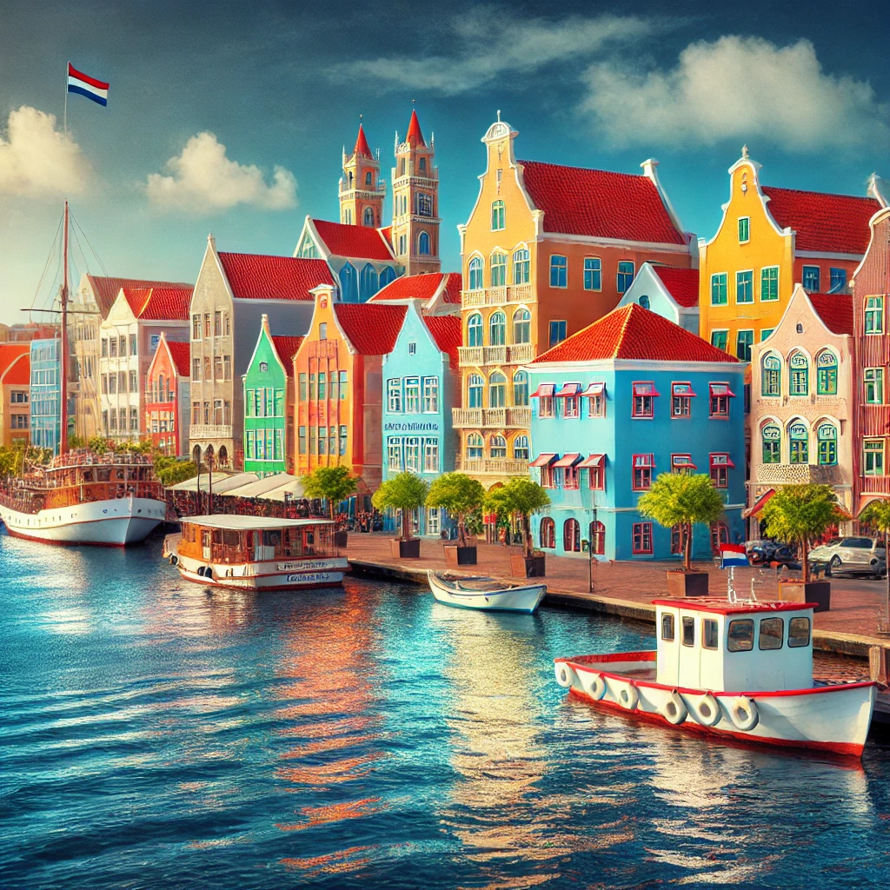

Discovering Curacao's Beauty
Curacao is a vibrant and picturesque island in the Caribbean, known for its colorful Dutch colonial architecture, stunning beaches, and lively atmosphere. Here are some of the must-visit spots.
- Willemstad: Explore the UNESCO World Heritage Site, famous for its colorful Dutch colonial buildings lining the waterfront.
- Blue Bay Beach: Relax on one of Curacao's most popular beaches, where you can enjoy crystal-clear waters and breathtaking views.
- Shete Boka National Park: Visit the rugged coastline with dramatic rocky cliffs, crashing waves, and unique wildlife.
- Hato Caves: Discover the awe-inspiring limestone caves with stalactites and stalagmites, offering a glimpse into the island's geological history.
Food and Drink in Curacao
Curacao's culinary scene is a delightful mix of Caribbean, Latin American, and European flavors. Here are some top dining experiences:
- Restaurant & Café de Kroon: Enjoy island dishes with a mix of Dutch influences and local specialties.
- Gouverneur de Rouville: Dine at this historic restaurant with stunning views of the harbor and an extensive menu of Caribbean and international cuisine.
- Plaza Bieu: A vibrant food court offering authentic street food from Curacaoan vendors, perfect for a taste of the local culture.
- Brisa do Mar: A seafood restaurant by the water, known for its fresh catches and laid-back atmosphere.
Top Tips for Visiting Curacao
Make the most of your Curacao trip with these helpful tips:
- Best Time to Visit: The dry season from January to April offers pleasant weather and fewer crowds, making it the ideal time to visit.
- Currency: The local currency is the Netherlands Antillean Guilder (ANG), but U.S. dollars are widely accepted in most places.
- Transportation: Renting a car is recommended for exploring the island, as public transportation options can be limited.
- Snorkeling and Diving: Curacao is famous for its vibrant coral reefs and crystal-clear waters, making it a prime spot for snorkeling and diving.
Where to Stay in Curacao
Whether you’re looking for luxury resorts or charming boutique hotels, Curacao offers a range of accommodations to suit every traveler.
- Renaissance Curacao Resort & Casino: A luxury resort with a private beach, casino, and upscale amenities.
- Santa Barbara Beach & Golf Resort: A tranquil beachfront resort with golf, spas, and a variety of dining options.
- Avila Beach Hotel: A historic hotel with beautiful ocean views, located just outside Willemstad's city center.
- Kontiki Beach Resort: A relaxing resort offering beachfront bungalows and a laid-back vibe for a more intimate experience.